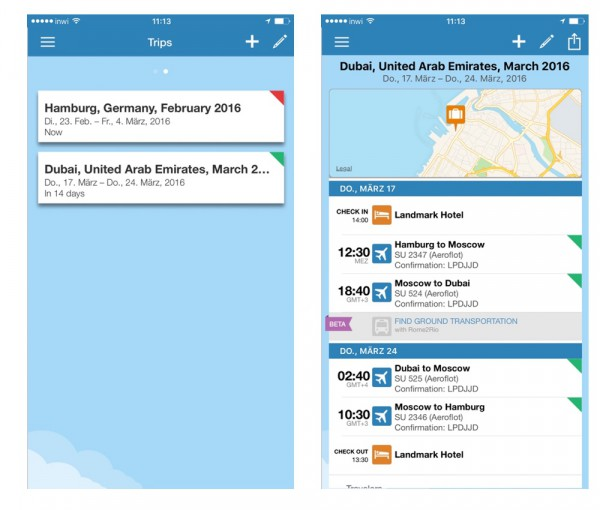
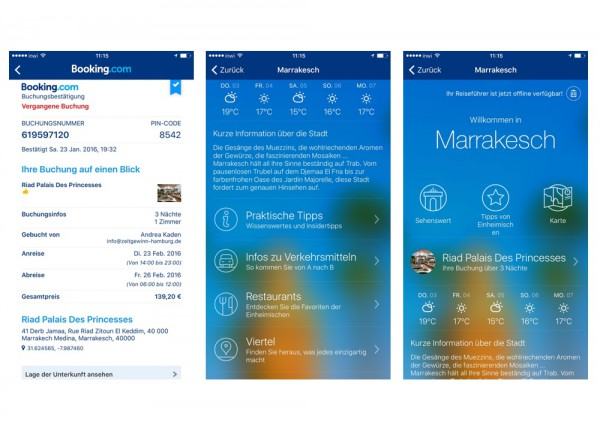
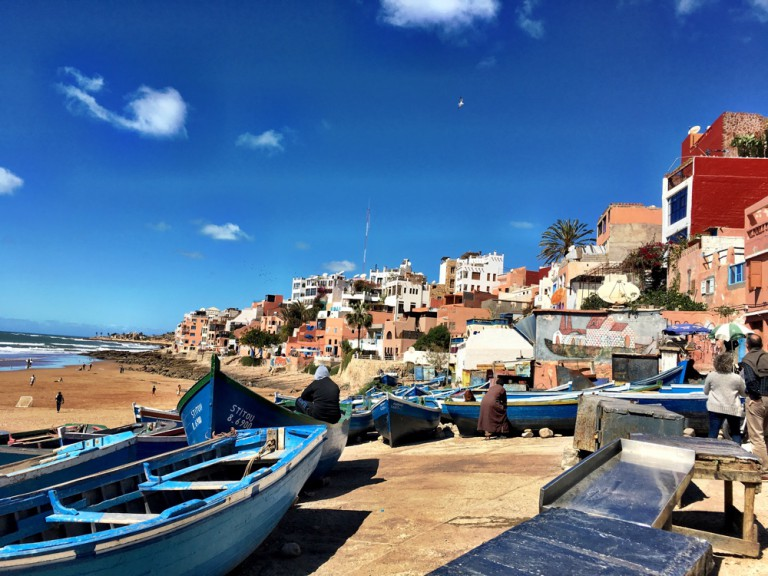

Checkliste Reisen und Arbeiten
Immer wieder habe ich gemerkt, dass auf Reisen generell zu viel einpacke, dafür aber wichtige Kleinigkeiten, die das Leben wirklich leichter machen, gern mal vergesse. Da ich immer mehr Arbeiten und Reisen verbinde, kann das besonders ärgerlich sein. Vor einiger Zeit habe ich daher begonnen eine Checkliste für das Packen vor Reisen zu führen. Ich nutze dafür Evernote (wie für alle Checklisten). Zuerst hatte ich zwei Listen, eine für Urlaubsreisen und eine für beruflich bedingte Reisen. Inzwischen habe ich aber festgestellt, dass es eigentlich für mich als Selbständige nicht mehr vorkommt, dass ich irgendwo nur Urlaub mache. Und wie Sie wahrscheinlich in meinem Blog festgestellt haben, arbeite ich papierlos und lebe auch privat, jedenfalls in Sachen Administration weitestgehend papierlos. Das ist auf der einen Seite Grund für leichtes Gepäck, aber es gibt auch ein paar Dinge zu beachten. Wenn Sie auch mit leichterem Gepäck reisen und trotzdem nichts vergessen wollen, sind die nachfolgenden Punkte für Sie vielleicht hilfreich.
Checkliste Reisevorbereitung
Generell für alle Reisen ist eine gute Vorbereitung Nachfolgendes zu tun. Einige der Punkte braucht man nur einmal zu erledigen, andere sind wiederholend.
- alle wichtigen Dokumente wie Reisepass, Krankenversicherung, Führerschein einmal Scannen und elektronisch dabei haben
- alle diese Daten sollten in der Cloud liegen, Dropbox, Google, Box oder auch der Cloud von Microsoft, damit sie auch Zugriff hätten, wenn Ihr Rechner/Handy den Dienst versagt oder abhanden kommt (beides sollte natürlich unbedingt Passwortgeschützt sein)
- alle Passwörter für Online-Anwendungen unbedingt dabei haben, am besten elektronisch mit 1Password oder Lastpass, so dass Sie sich nur ein Musterpasswort merken müssen, das am besten nirgends steht
- Backup von Handy und- oder Tablet machen
- eine Datensicherung des Rechners machen und zu Hause lassen
- eine Datensicherung machen und auf externer Festplatte mitnehmen (damit Sie arbeitsfähig sind, falls der Rechner den Geist aufgibt, Sie vielleicht einen neuen kaufen müssen und Sie kein oder nicht genügend Internet haben)
- checken, dass man alle benötigte Software, die offline betreiben werden soll, downgeloadet hat, denn manchmal gibt es damit große Probleme unterwegs, nicht genügend Bandbreite, die Kreditkarte wird plötzlich online nicht akzeptiert….
- genügend Literatur, Filme oder Podcasts downloaden, falls die Internetkapazität vor Ort nicht reicht
- offline Karten und Reiseführer herunterladen
- Steckdosen für das jeweilige Land checken und Adapter besorgen, am besten einen mit vielen Möglichkeiten und mehreren USB Anschlüssen zum Geräte aufladen, denn häufig sind Steckdosen rar, hier mein meine Favorit: All-in-One-Charger
Im Laufe der letzten Reisen haben sich doch so einige kleine Sachen angesammelt, die ich gern dabei habe, und die mir schon häufiger sehr hilfreich waren. Und jetzt nach meinem ersten CoWorking Aufenthalt in Marokko sind noch ein paar Punkte dazu gekommen. Allerdings habe ich inzwischen eine extra kleine Tasche, gerade für den technischen Kram, die immer gepackt und bereit ist, so dass ich nicht jedes Mal neu zusammensuchen muss.
Checkliste Einpacken
- alle notwenigen Kabel und Adapter, s.o. (Achtung: Ethernet-Adapter nicht vergessen)
- Taschenmesser (ein kleines Taschenmesser ist auch im Handgepäck kein Problem mehr)
- Reisebesteck
- ein zweites oder Ersatztelefon
- mehrere Kreditkarten, denn aus unerfindlichen Gründen funktioniert mal die eine und die andere nicht, oder umgekehrt
- in vielen Ländern werden auch Euro als Trinkgeld geschätzt (also Kleingeld mitnehmen)
- auch in der jeweils Landeswährung immer darauf achten, dass man genügend Kleingeld hat
- für unterwegs liebe ich mein aufblasbares Kissen und irgendein Kuscheltuch/Schal, denn selbst auf dem Weg in sehr südliche Gefilde ist es im Flieger, Zug oder Bus manchmal sehr kalt
- unbedingt Ohrenstöpsel und wer’s dunkel braucht zum Schlafen Augenbinde mitnehmen, ja ich weiß, ist nicht gerade sexy, aber beides hilft
- für das Arbeiten in einem CoWorking Space sind auch Kopfhörer hilfreich, gern on-ear, die schirmen besser Geräusche ab, denn irgendwas ist immer, und das in verschiedensten Sprachen, das lenkt ab
- wer vor Ort arbeitet: Visualisierungsmaterial ist sehr hilfreich, auch für spontane Einsätzen
- ein Handtuch, auch wenn angegeben wird, dass es vor Ort alles gibt, sind die Vorstellungen davon sehr unterschiedlich
- ich fühle mich in turbulenten Städten sehr sicher mit Taschen, Rucksäcken von Pacsafe, denn die Reißverschlüsse kann man mit Karabinern sichern und alle Riemen sind innen mit Stahl versehen, so dass man sie nicht einfach durchschneiden kann, die Kombi macht es Taschendieben zumindest etwas schwerer (diese beiden liebe ich: Pacsafe Metrosafe und Pascafe Venturesafe)
- insbesondere Frauen: denkt an Eure gewohnten Hygieneartikel (Tampons und Slipeinlagen sind nicht überall leicht zu bekommen)
- auch in gemäßigten muslimischen Ländern gibt es Ecken, wo man sich im T-Shirt nicht wohl fühlt, weil alle Einheimischen nur lang tragen, also was Leichtes langärmeliges mitnehmen
- ansonsten zwei drei Sportfunktionsshirts, die sind pflegeleicht und trocknen besonders schnell
- Outdoorhosen/Wanderhosen mit abtretbaren Beinen finde ich auch sehr praktisch, weil sie zwei in einem sind
Hilfreiche Apps/Tools fürs Reisen
Für die Reiseorganisation gibt es ja zahlreiche Online-Tools und wenn man wie ich papierlos reisen möchte, kommt man ja um Tools ohnehin nicht herum. Hier sind meine Favoriten.
Tripit.com -Reiseplanung
Zuerst habe ich mich ein bissl gegen das Tool gesträubt, hatte aber von Vielreisenden schon viel darüber gelesen, also musst ich es ausprobieren. Tripit ist ein Reiseorganisationstool. Es funktioniert folgendermaßen:
Nachdem man sich einmal angemeldet hat, ein eigenes Konto hat, schickt man alle Tickets, die man bekommt, einfach an plans@tripit.com. Dort werden alle Tickest, egal ob Flug, Zug oder Hotelbuchung (letzteres ist noch nicht ganz perfekt) ausgelesen und meinem Konto zugeordnet. Mich spricht an:
- die App ist super easy zu bedienen und sehr übersichtlich und ansprechend
- man wird über Eincheckmöglichkeiten, Flugverspätungen oder Upgrademöglichkeiten informiert und das für alle Fluggesellschaften in einer App
- Boardkarten erscheinen auch in Tripit
- für Unternehmen macht Tripit auch sehr viel Sinn, weil die zentrale Reiseorganisation einfach alle Tickets an eine Adresse schicken kann und sie werden der jeweiligen Person automatisch zugeordnet

Tripit App
Nachteilig empfinde ich:
- anders als heutzutage häufig üblich, verlängert sich der Account nach der Testphase automatisch kostenpflichtig ($ 59) für ein Jahr, während es bei vielen Programmen, die ich teste, genau anders herum ist, man testet, wird informiert über den Ablauf der Testphase und muss aktiv werden, wenn man es weiter nutzen will
Wer eine Alternative ausprobieren will kann sich Tripcase anschauen.
Booking.com – Hotelbuchung und Orientierung vor Ort
Ist derzeit mein Lieblingstool für Hotelbuchungen und kurze Städtetrips, weil:
- die Hotels sind sehr gut und detailliert dargestellt
- nach meiner Erfahrung bisher stimmen die Bewertungen der Hotels
- Hotels sind ohne Kosten bis zum letzten Tag stornierbar
- man kann vor Ort die Zahlweise wählen, Rechnung gibt es dann elektronisch
- im Vorwege, wird man an die Abreisetermine erinnert
- Transportmöglichkeiten, Kosten und notwendige Informationen (in Marokko z.B. Preis vor der Taxifahrt verhandeln) vom Flughafen oder Bahnhof werden angeboten
- kurze knackige Beschreibung der Sehenswürdigkeiten und wie sie vom jeweiligen Hotel zu erreichen sind, ist sehr hilfreiches
- gibt neben den offiziellen Sehenswürdigkeiten Geheimtipps von Insidern
- und besonders wichtig: auch offline Maps, ich konnte mich im Straßengeflecht von Marrakeschs Innenstadt wunderbar auch ohne Führer bewegen, da ich auch ohne Internet, nur dank GPS immer eine Idee hatte, wo ich gerade bin und wo ich hin will
- einziger Nachteil: die Newsletter die man bekommt, auch wenn man schon an dem Ort ist, gibt es immer wieder Tipps für Hotels vor Ort, aber kann man natürlich abbestellen

Offline Reiseführer und Karten
Mit offline-Reisführern und Karten habe ich insgesamt sehr gute Erfahrungen gemacht, egal ob ich mich in Städten oder über Land bewegt habe. Es gibt sie zahlreich, einfach im Appstore suchen, Bewertungen studieren und ausprobieren.
Arbeits- und Kollaborationstools
Sobald man Internet hat funktionieren natürlich alle gewohnten Tools. Ich nutze gern Dropbox, Slack zum Chatten, Skype und Swiggel zum Videotalk. Es ist aber auch nützlich, sich mit Google Hangout vertraut zu machen, da ich zum Beispiel gerade beim letzten Trip in Marokko erlebt habe, dass Skype gesperrt war, ich aber wichtige Online-Meeting Termine hatte. Hangouts war da sehr hilfreich. Aber man sollte in jedem Fall softwaremäßig so aufgestellt sein, dass man auch offline arbeiten kann.
Haben Sie noch weitere Tipps für diese Checkliste?
Weitere Artikel

Gar nicht lean ist auch mal gut
Das schlanke, entschlackte, effiziente Büro ist meine Leidenschaft. Doch vor einiger Zeit habe ich erfahren, dass es manchmal gut ist, nicht lean zu sein, nicht auf die „schlanke Linie“ zu achten. Ich war eingeladen, einen …

CoWorking am Meer
Von Marrakesch bin ich mit dem Bus sehr entspannt, klimatisiert und für nur 10 Euro in drei Stunden nach Agadir gefahren. Magda vom Sun-Desk hatte einen Taxifahrer organisiert, der mich vom Busbahnhof mach Taghazout gebracht hat …